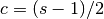

pandas.stats.moments.ewma¶
- pandas.stats.moments.ewma(arg, com=None, span=None, min_periods=0, freq=None, time_rule=None, adjust=True)¶
Exponentially-weighted moving average
Parameters : arg : Series, DataFrame
com : float. optional
Center of mass: alpha = com / (1 + com),
span : float, optional
Specify decay in terms of span, alpha = 2 / (span + 1)
min_periods : int, default 0
Number of observations in sample to require (only affects beginning)
freq : None or string alias / date offset object, default=None
Frequency to conform to before computing statistic time_rule is a legacy alias for freq
adjust : boolean, default True
Divide by decaying adjustment factor in beginning periods to account for imbalance in relative weightings (viewing EWMA as a moving average)
Returns : y : type of input argument
Notes
Either center of mass or span must be specified
EWMA is sometimes specified using a “span” parameter s, we have have that the decay parameter alpha is related to the span as

where c is the center of mass. Given a span, the associated center of mass is 
So a “20-day EWMA” would have center 9.5.